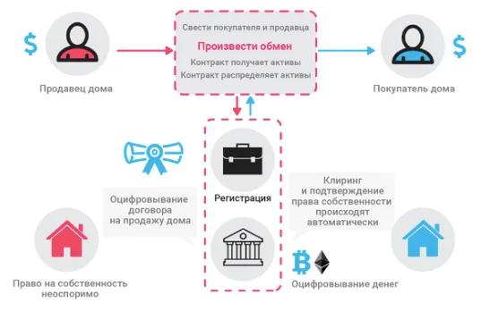
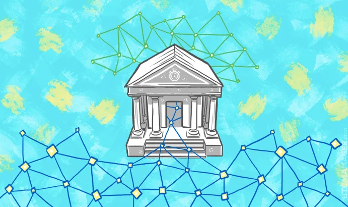

Технология блокчейн и ее особенности
Информация в Blockchain открыта для любого. Это означает, что вы можете посмотреть историю транзакции и путь, по которому она совершалась. Информация о размере сделке тоже открытая. При этом личность адресата и адресанта не раскрывается. В этом заключается прозрачность блокчейна.
Доступ к Blockchain происходит с использованием специальных ключей, гарантирующих надежность всей сети. Он есть у каждого пользователя. Ключ представляет собой набор криптографических записей. Он абсолютно уникален, что гарантирует невозможность подмены данных и хакерских атак. Чтобы это осуществить, взломщикам нужно получить доступ ко всем компьютерам сети.
Механизмы, обеспечивающие дееспособность и надежность блокчейна – это алгоритмы Proof of Work или PoW, проделанной работы, и Proof of Stake или PoS, подтверждение доли. Благодаря ним в блокчейне достигается консенсус.
Алгоритм Proof of Work применяется в блокчейне Bitcoin. Механизм его работы похож с отчетностью в офисе. Сотрудники регулярно составляют отчеты для проверки, подтверждающие факт того, что они выполнили определенную задачу. Без этого они не получат зарплату, так как не подтвердили факт проделанной работы.
PoW в блокчейн проверяет вычисления, генерируемые в процессе создания нового блока. Здесь используется следующая модель: блок признается верным и закрытым, при условии, что значение его хеша меньше чем искомая майнерами подпись. То есть, определенный криптографический шифр показывает подлинность блока. И в качестве «ревизоров», проверяющих подлинность блока, выступают ноды.
Сейчас в сети Bitcoin блок создается в течение 10 минут. В этот момент и совершается поиск подписи. А уже проверка происходит мгновенно. Алгоритм часто критикуется из-за того, что для его работы необходимы большие вычислительные мощности. И именно по этой причине при переводе биткоинов между кошельками взимается комиссия. Так происходит оплата за использованные вычислительные мощности.
На фоне этого был создан новый алгоритм – Proof of Stake. Одним из сподвижников PoS является основатель криптовалюты Ethereum Виталик Бутерин. По его словам, этот алгоритм не такой ресурсоемкий, и в целом, дешевле PoW. Блокчейн криптовалюты Ethereum осуществляет переход с PoW на PoS.
Если в Proof of Work на первый план выходит вычислительная мощность, то в Proof of Stake роль играет баланс кошелька. Осуществление и подтверждение транзакций будет происходить без активного участия вычислительной техники, а благодаря активным монетам на кошельках. В идеале, все владельцы криптовалюты на блокчейне с PoS будут выступать в роли инвесторов. Роль майнинга отойдет на второй план. Однако у алгоритма есть существенные недостатки – возможно проведение дублирующих транзакций.
Оптимальным вариантом алгоритма для блокчейн может быть сочетание PoS и PoW. Пока что этот механизм не доработан, хотя и используется в некоторых альткоинах: KATZcoin, Blackcoin, Espers.
На данном этапе своего развития блокчейн имеет и преимущества, и недостатки. Мы их систематизировали в таблицу.
ПреимуществаНедостаткиДецентрализация – участники сети равны между собой и могут обмениваться данными напрямуюМасштабируемость – если на блокчейн Bitcoin приходилось бы доля транзакций Виза, то его размер достигал бы сотен терабайтовНадежность – исключена подмена данных и хакерские атаки, так как используются специальные зашифрованные ключиМошенничество – передача данных блокчейн происходит необратимо. Из-за этого невозможен откат операции, даже если он была проведена по ошибкеПрозрачность – все блоки доступны для публичного просмотра. Можно проверить пройденный путь для любой транзакцииАтака 51% - если в блокчейне Биткоина 51% вычислительных мощностей будет принадлежать одному устройству, то целостность нарушитсяУниверсальность – блокчейн может применяться не только в финансовом секторе, но и других сферах жизни (юриспруденция, недвижимость)
Где применяют блокчейн
Блокчейн появился вместе с пионером всех криптовалют Bitcoin. О его функциональных возможностях и «обязанностях» мы с вами говорили выше. Блокчейн гарантирует проведение транзакций и хранит все данные о них.
Качественный шаг вперед попытались сделать Виталик Бутерин и его сотоварищи. Блокчейн криптовалюты Ethereum часто относят ко второму поколению. У него есть свои особенности архитектуры.
Качественный шаг вперед попытались сделать Виталик Бутерин и его сотоварищи. Блокчейн криптовалюты Ethereum часто относят ко второму поколению. У него есть свои особенности архитектуры.
Если блокчейн Bitcoin изначально моделировался под проведение финансовых транзакций, то разработчикам Эфириума удалось реализовать вычислительную одноранговую сеть, в которой могут выполняться запрограммированные алгоритмы. Они получили название смарт контракты или умные контракты. Суть таких контрактов заключается в том, что их выполнение происходит при удовлетворении определенных условий.
Умный контракт на примере сделке о покупке недвижимости:

Очевидно, что технология блокчейн актуальна не только для криптовалютных транзакций, а для всей финтех-сферы в целом. Все что связано с транзакциями может поддерживаться блокчейном.
Перспективность Blockchain в финансовой сфере признали крупнейшие банки мира. Еще в 2013-м году был создан консорциум R3. Туда вошли такие банки как J.P. Morgan, Goldman Sachs, Santander, IТG и другие. Группа занимается тестированием децентрализованного реестра в банковской сфере. Отдельные банки также инвестируют в блокчейн-стартапы, регулярно появляющиеся последние несколько лет.
Интерес банков к технологии связан с потенциальной угрозой, которую для них представляют криптовалюты. Блокчейн поможет сократить расходы на транзакции, сделать их безопаснее. Однако реализация полностью децентрализованного протокола в банковской сфере подорвет ее изнутри.

Практичность блокчейна неоспорима во всем, что касается хранения данных и подтверждения подлинности. Потенциально эта децентрализованная система данных способна уничтожить коррупцию. В блокчейн можно записывать даты рождения людей, финансовые транзакции, отпечатки пальцев. Хранить сведения о документах вроде дипломов, паспортов, водительских прав. В перспективе это может помочь в борьбе с разного рода мошенничеством.
Примеры применения блокчейн в различных сферах жизни, помимо финансов:
Идентификация личности. На основе технологии блокчейн работают сервисы в области идентификации и подтверждения прав доступа. Они создают цифровой аналог удостоверения личности. К таким стартапам относят HYRP, BlockVerify, OneName и другие
Авторские права. Платформа Ascribe использует дополняемый реестр, в который художники, музыканты, изобретатели могут хранить авторские права с помощью зашифрованных идентификаторов.
Голосования. Пока что открытый реестр используется только в частных голосованиях. Однако в университете штата Вирджиния хотят внедрить технологию, базирующуюся на блокчейн. Это снизит вероятность фальсификации до нуля.
Управление и юриспруденция. Потенциал Blocckhain в этой сфере безграничен. В идеале может быть создана система с отчетностью представителей местной и государственной власти, хранение данных о бюджете. Уже сейчас есть проекты вроде Borderless, которые объединяют в себе юридические и экономические услуги.
Музыка. Проект Bittunes позволяет исполнителям композиций сохранить за собой права и заниматься продажей собственных работ. Есть и другие сервисы, нацеленные на распространение независимой музыки и продвижение исполнителей.
Благотворительность. Блокчейн с его способностью записывать и хранить данные очень эффективен в сфере благотворительности. Так в платформе GiveTrack представлена открытая информация о пожертвованиях в фонды и их затратах. Это эффективный инструмент в борьбе с «террористами благотворительности».
Недвижимость. Внедрение блокчейн в сферу недвижимости способно ее значительно усовершенствовать. Ускорится процесс покупки-продажи, появится инструмент надежного хранения данных о правах на собственность и так далее. Технология блокчейн применяется в сфере услуг, биржевой и обычной торговли. Потенциально она может быть полезной везде, где необходима отчетность, проверки подлинности чего-либо, хранение данных. Потенциал безграничен.
Заключение
Реально ли знать все тонкости и возможности блокчейна? Нет. 99,9% населения планеты этого и не нужно. Важнее понимать сам принцип технологии и то, как она устроена. А с этим придет и оценка потенциала блокчейна. Возможно, это даже изменит вашу жизнь